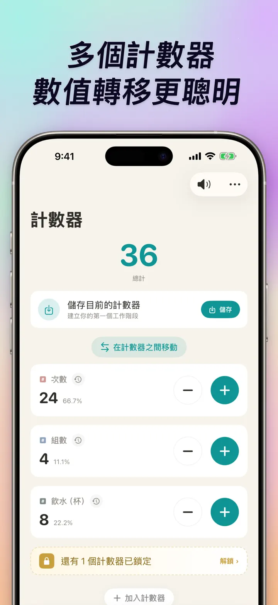
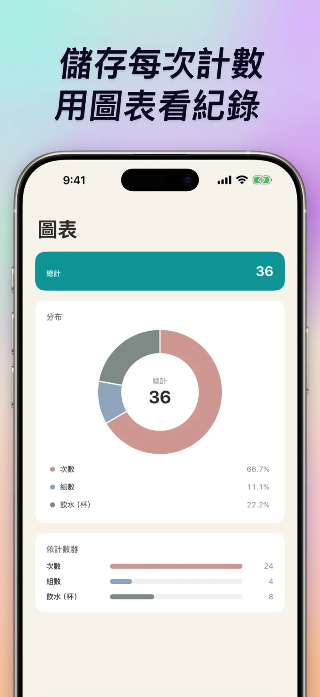
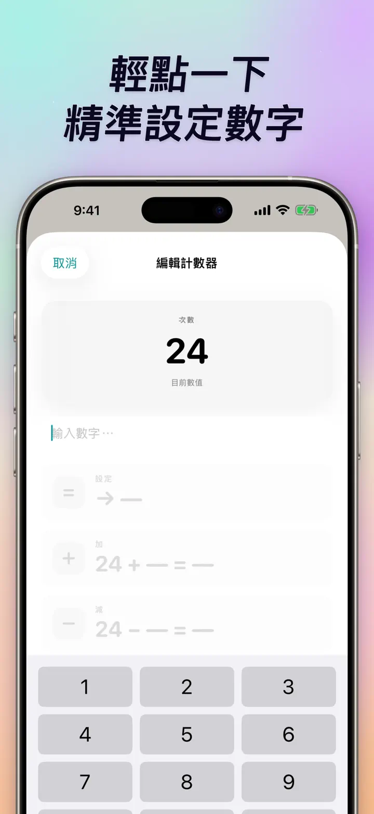
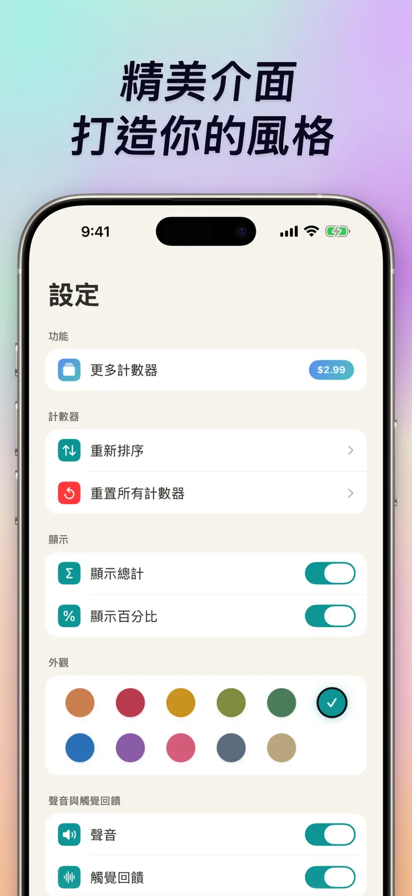
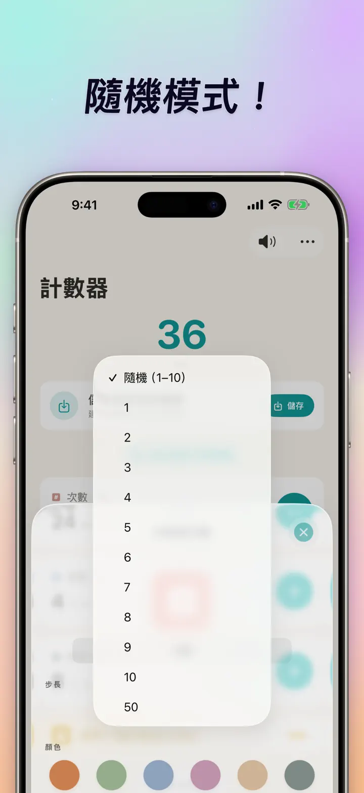

計數器123
Watch同步、點擊器、比分
全新主畫面小工具——直接在小工具上點 +/- 計數，免打開 App。計數器、點擊器，支援 Apple Watch 同步、隨機模式、圖表與紀錄。
從 App Store 下載關於此 App
計數器123是為 iPhone、iPad 和 Apple Watch 打造的快速、靈活的計數 App。你可以自訂名稱與顏色，記錄任何需要計數的事物——重訓次數、念珠、編織段數、課堂積分、棒球投球數、庫存、遊戲分數。所有資料都保存在你的裝置上，完全離線。
自訂計數器
- 為不同活動、比賽、日常流程或清單建立獨立計數器
- 為每個計數器自訂名稱和顏色
- 拖放重新排序，直覺又快速
- 長按可連續加減，快速更新
- 完全離線運作——不必註冊、不用雲端
即時輸入 & 批量操作
- 點一下任何計數器直接設定起始值——不用歸零再重算
- 批量加減：任意數值一次加完或扣完
- 數值轉移：計數器之間直接搬移，不用加減兩次
- 自訂步進：一次加 1、5、10、100 或任何數值
- 即時差異預覽：每次變動都清楚標示
隨機模式
- 每次點擊都隨機產生 1 到 10 的新數值
- 可用加號加入隨機值，也可用減號扣除隨機值
- 適合訓練、遊戲、隨機獎勵、課堂活動與練習流程
- 每次隨機點擊都會記錄在該計數器的紀錄中
總計 & 圖表
- 一目了然的總計
- 百分比檢視：每個計數器佔整體的比例
- 長條圖：數值（#）與百分比（%）模式可切換
- 按數值排序，排名立即顯示
紀錄 & 分享
- 完整變動歷史：加、減、編輯通通留存
- 計數器組合隨存隨叫，方便重複使用
- 把計數器設定分享給隊友、學生或朋友
- 紀錄可按日期日誌、分組工作階段，或日/週/月統計查看
Apple Watch 即時同步
- 在 iPhone 或 Apple Watch 上更新，兩邊都會保持同步
- 真正的 watchOS 原生 App——不是殼
- 名稱、顏色、數值完整同步到手腕
- 點一下計數，長按連續加
- 手機不在身邊也能獨立運作
iPhone、iPad 與 Apple Watch 全面支援
- 各種螢幕尺寸都有最佳版面
- iPad 一次顯示更多計數器，支援 Split View
- 隱私至上：本機儲存，不連雲端、不需帳號
適合這些場景
- 健身重訓的次數和組數
- 編織段數、鉤針針目
- 念珠、佛珠、誦經祈禱次數
- 課堂積分、學生分組計分
- 棒球投球數、打席數
- 庫存清點、盤點作業
- 桌遊、撲克牌計分
- 游泳圈數、跑步圈數
- 賞鳥生命清單
- 活動人數點名
- 習慣養成、目標追蹤
- 倉庫循環盤點
下載計數器123，讓每次計數都輕鬆有型——清楚、快速、不外流。
隱私政策: https://masawata.net/privacy-policy.html 使用條款: https://www.apple.com/legal/internet-services/itunes/dev/stdeula/
螢幕快照





計數器123
全新主畫面小工具——直接在小工具上點 +/- 計數，免打開 App。計數器、點擊器，支援 Apple Watch 同步、隨機模式、圖表與紀錄。
從 App Store 下載